Tente abrir esse site em vários dispositivos ou simplesmente aumente e diminua o tamamnho do seu navegador
A tag a ser utilizada para imagens dinâmicas é picture
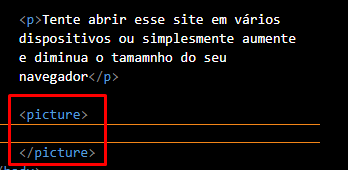Essa tag "diz" ao usário que VAI APRECER UMA IMAGEM. Ela permite que você crie várias fontes/tamanhos e faz com as imagens se adequem ao tamanho da tela do disositivo que esta sendo utilizado (celular/tablet ou computador)
Dentro da tag picture utilizamos a tag a

Inserimos no site uma imagem em tamanho "G". Porém, quando o usuário navega numa tela pequena, é gerada uma barra de rolagem na borda inferior da página. Isso acontece prq a imagem é muito grande pro tamanho da tela do dispositivo que esta sendo utilizado
Pra resolver isso, dentro da tag picture, utilizamos a tag source ->source:media:type
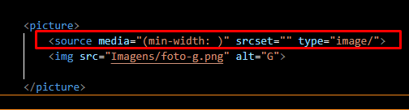A imagem abaixo descreve o ponto "max.width" como um critério para carregar nossa imagem "G"
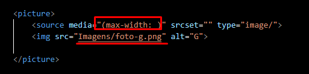Mas se o navegador tiver o tamanho menor que o tamanho da imagem "G", determniamos que a imagem a ser carregada será a "M"
A imagem "G" tem 1000px. Então, determinamos que, se o navegador tiver a tela menor que 1050px (Deixamos uma margem de 50px), a imagem "M" deve ser carrega
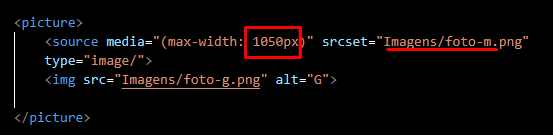E repitimos o mesmo procedimento pro tamanho de iumagem "P"
Nossa imagem "M" tem 700px. Determniamos que, se o navegador tiver menos que 750px, a imagem a ser carregada deve ser a "P"
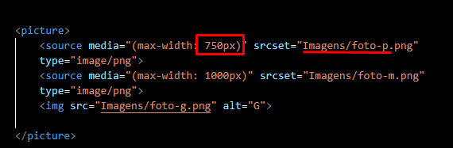É possivel inserir vários tamanhos de imagens. Desde que a orden de tamanhos seja respeitada. É aconselhável que se mantenha na ordem do menor para o maior.
Vamos aprender a reporoduzir audios em HTML5
A tag a ser utilizada é audio
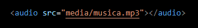Até então, não é possivel executar o audio. Pra corrigir isso, precisamos inserir o "complemento" autoplay
Porém, antes de autoplay, é necessário inserir as funções do player. Pra isso, utilizamos controls
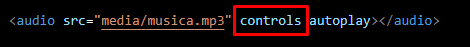Dessa forma, o player será apresentado conforme abaixo. E também permite inetração
Alguns navegadores não têm total compatibilidade com reprodução de audio
Neste exemplo, tivemos de utilizar a função "controls" antes de "autoplay". Isso é devido a falta de compatibilidade para reprodução automática do navegador
Arquviso padrões e recomendáveis para utilização de audio em todosos navegadores são basicamente: MP3, WAV e OGG
Outro meio de adicionar audio é:
Remover o parâmetro souce criado pela tag audioe inserir dentro da tag audio. Só que, deverá ser escolhido o tipo source:src
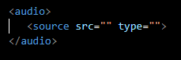Após inserir seu arquivo de audio, é necessário inserir o tipo no campo type. Neste exemplo, vamos itulizar "audio/mpeg" (aquivo do tipo MP3)
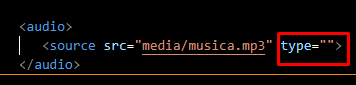 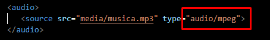Podemos fazer com o que a navegador execute os arquivos por tipo de media. No exemplo abaixo, inserimos mais duas linhas. Uma com arquivo "OGG" e outra com "MP3". O navegador irá respeitar a ordem das linhas e irá procurar peli primeiro tipo. Caso não encontre, irá pro segundo. E assim por diante.
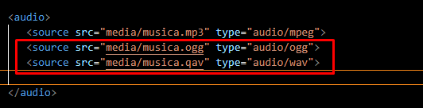Caso não seja compatível com nenhum dos arquvos. É possivel deixar uma mensagem informando sobre a incompatibilidade
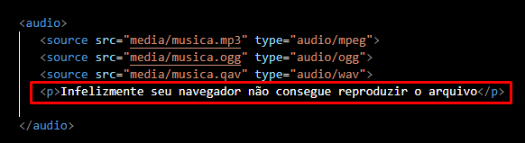Para contornar isso, podemos deixar um link para download do arquivo junto da mensagem
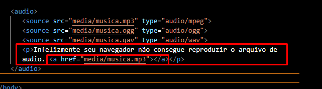Caso tenha feito tudo isso e o audio não seja compatível com o navegador pode-se utilizar a função preload a frente de audio
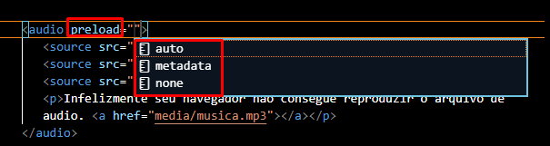É um tanto "perigoso" utilizar a "auto". Pois só será possivel executar o arquvio após o download da media feito pelo carregado. E se o arquvo for muito grande não é nada benéfico para o site. Deixar o campo em branco determina que o aprâmetro será "auto"
Neste exemplo, utilizamos "metada" seguido de "auto play controls"
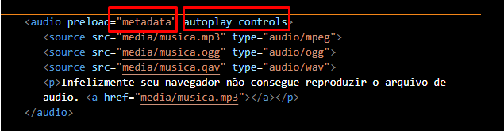temos também uma outra função que podemos ahregar nessa linha de comando. o loop. Isso fará com que o audio volte a tocar assim que for finalizado
Esta função, utilizamos à frente de "controls"
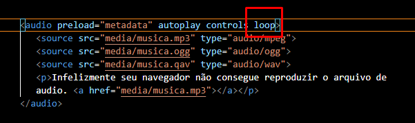Obs. Sempre evitar arquvios do tipo "WAV" pois são muito grandes